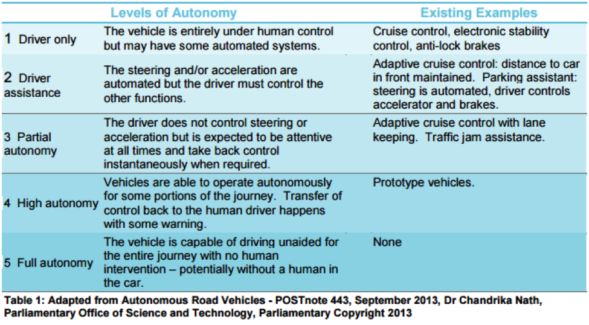

Defining automation becomes tricky when looking at modern examples. At what point is a system truly automatic? Many would say that when no inputs are required and the system has no dependencies it might finally be automated. As we look at today’s technology, there are minimal cases of a technology requiring zero inputs. But we are certainly moving closer. The table below details the levels of automation using a smart car as a basis.
Amazon Drone Delivery
Amazon Drone Delivery In recent news, the e-retailer powerhouse Amazon.com has made ripples with the announcement of drone delivery plans. Working alongside the Federal Aviation Administration, Amazon hopes to implement a delivery network powered by Unmanned Aircraft Systems. While currently controlled by licensed pilots, there is hope to automate the process using GPS technologies to deliver packages in less that 30 minutes. The polished system would still require input from Amazon’s order processor for a shipping address, but the rest of the functions would be computed by the drone itself.
The Google Car
Just as, if not more notable than the Amazon Drone news release has been the development of the Google Car. While still not on the market, Google has been making remarkable progress. In just six months, the Google Car was taken from a prototype to a manufactured vehicle legal on public roads (with stipulations). Google is a great example of autonomous systems providing direct benefit to the user. Using GPS technology and advanced lasers, the Google Car can effectively navigate itself on public roadways. As technology progresses, we as users are sure to see more of our day to day workflows becoming automated providing a flux of benefits and luxuries to society.